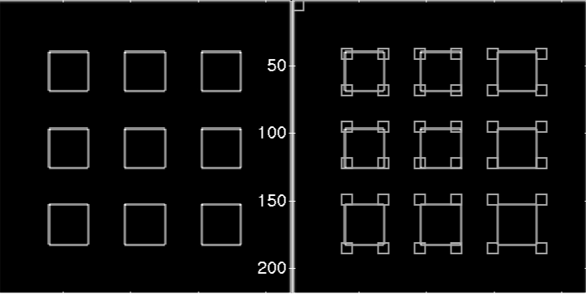
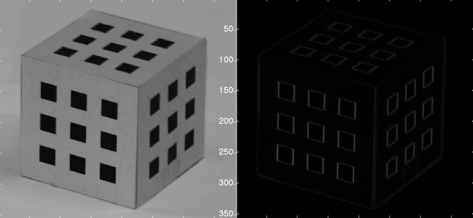
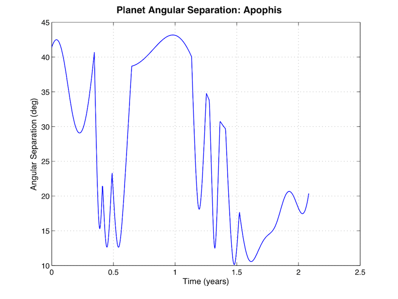

| New In Version 8.0 |  |
The SCT toolbox now includes Imaging, Power and CubeSat modules.
Contents
New Features
Version 8 of the Spacecraft Control Toolbox was released in December, 2009. Some of the new features include:
- Imaging module for image processing.
- Optics functions (SCPro) for image processing.
- CubeSat module for system design, mission planning and simulation.
- Batch orbit estimation using downhill simplex and differential corrector.
- Solar terminator line detection on the earth and planets.
- Optical navigation functions and demos.
In addition, the CubeSat module forms the basis of a new CubeSat Toolbox suitable for university teams developing their own CubeSats.
Imaging Module
There is great interest in using cameras onboard satellites for navigation. The new imaging module allows you to apply a variety of imaging processing techniques to this problem such as corner and edge detection. Corner detection using CornerDetector.m. The image is for a lens calibration pattern. The corner detector uses derivative information to find areas containing corners.

Edge enhancement using GaussianDerivative.m. This is a step in pattern recognition.

Optical Navigation
Planetary chord sizes for the Messenger mission. This plot is from an analysis of an optical navigation system that uses measurements of angle between planet centers and stars. The entire navigation system is part of v8.0.

Change List
The following is a complete list of functions which have been added since Version 7.1.
New Modules
CubeSat module Imaging module Power module
Core Toolbox
AttitudeControl/Demos/AttitudeManeuver/SCPointingDemo.m Common/CAD/CentroidOBJFile.m Common/CAD/InertiaCM.m Common/CAD/InertiaP.m Common/CAD/TotalMassProps.m Common/CAD/TransRotInertia.m Common/CAD/TransRotMassProps.m Common/Control/FRespPlot.m Common/Control/PIDProper.m Common/Coord/AxisAngleToMatrix.m Common/Coord/RAzToLatLon.m Common/Coord/RHAzToECEF.m Common/Coord/UnitVectorFromOffset.m Common/General/ColorSpread.m Common/General/Inflation.m Common/General/LatexTableFromStructure.m Common/General/LegendFig.m Common/Graphics/AnglePatch.m Common/Graphics/AssignColors.m Common/Graphics/CameraControls.m Common/Graphics/ConvertOBJFileColorToMatlab.m Common/Graphics/InformDlg.m Common/Graphics/LabelLine.m Common/Graphics/PlotPlanet.m Common/Math/Armijo.m Common/Math/NewtonsMethod.m Common/Math/SimplexScaling.m Common/Math/SimplexScaling2.m Common/Math/UnitVectorAverage.m Common/Probability/GaussianRSG.mv Common/Demos/CAD/ExampleMassProps.m Common/Demos/Math/SimplexConstraintRelaxationDemo.m Common/Demos/Math/SimplexScalingDemo.m Common/Demos/Probability/GaussianRSGDemo.m Estimation/DemoFuns/RHS1D.m Estimation/OrbitEstimation/BatchLSQOD.m Estimation/OrbitEstimation/GroundStation.m Estimation/OrbitEstimation/OpticalNavigationMeasurement.m Estimation/OrbitEstimation/OrbitODGenObs.m Estimation/OrbitEstimation/SeqBatchLSQOD.m Estimation/StellarCatalog/VM2Electrons.m Estimation/Demos/OrbitEstimation/BatchLSQDemo.m Estimation/Demos/OrbitEstimation/SeqBatchLSQDemo.m Estimation/Demos/StellarAttDet/ADUKF2SensorSim.m Estimation/Demos/UKF/UKFDemoOrbitOpticalNav.m Orbit/GravityModels/GravityMap.m Orbit/OrbitCoord/ENUToECEF.m Orbit/OrbitManeuver/DVReentry.m Orbit/OrbitMechanics/AGravityCStruct.m Orbit/OrbitMechanics/FlightPathAngleFromCartEl.m Orbit/OrbitMechanics/OrbitInsertion.m Orbit/OrbitMechanics/PropagateTLECommonTime.m Orbit/OrbitPropagator/FOrbitMultiSpacecraft.m Orbit/Vehicle/MassWingedVehicle.m Orbit/Demos/OrbitManeuver/ApophisTransfer.m Orbit/Demos/OrbitManeuver/TwoBurnGeoTransfer.m Orbit/Demos/OrbitMechanics/EarthOrbitSim.m Orbit/Demos/OrbitPropagator/GravityModelDemo.m Orbit/Demos/Vehicle/TSTODemo.m Propulsion/Airbreathing/EngineDataFromTable.m Propulsion/Airbreathing/MixedFlowTurbofan.m Propulsion/Airbreathing/RamjetH2.m Propulsion/Chemical/AreaRatioFromMach.m Propulsion/Chemical/GasProperties.m Propulsion/Chemical/IsentropicExpansion.m Propulsion/Chemical/MachFromAreaRatio.m Propulsion/Chemical/QR.m Propulsion/Chemical/QRHydrocarbon.m Propulsion/Chemical/QRHydrogen.m Propulsion/Chemical/RocketH2.m Propulsion/Chemical/UEQR.m Propulsion/LaunchSim/LaunchTime.m Propulsion/LVModels/LiftAndDragSeaLevelToOrbit.m Propulsion/LVModels/LiftingReentry3D.m Propulsion/LVModels/OptimizeTSTO.m Propulsion/LVModels/RHSRigidBody.m Propulsion/LVModels/RHSTSTO.m Propulsion/LVModels/SolidRocketInertia.m Propulsion/LVModels/TSTOOptimization.m Propulsion/LVModels/TSTOOptimizationForCrewedVersion.m Propulsion/LVModels/TSTOSizing.m Propulsion/Demos/Chemical/StructuralFractionSSTO.m Propulsion/Demos/LVModels/LiftingReentrySimulation3D.m Propulsion/Demos/LVModels/TSTOSimulation3D.m SC/Actuator/HydrazineThruster.m SC/Ephem/TerminatorLine.m SC/SystemDesign/SCDisturbances.m SC/Demos/CAD/BuildSubassembly.m SC/Demos/CAD/BuildTSTOUpperStage.m SC/Demos/CAD/DisturbancesDefaults.m SC/Demos/Ephemeris/ExampleLEOAnalysis.m SC/Demos/Ephemeris/TerminatorLineDemo.m SCPro/AirbreathingVehicle/ComputeAlphaConstantFlightPathAngle.m SCPro/AirbreathingVehicle/Takeoff.m SCPro/AirbreathingVehicle/TurboRamjetSim.m SCPro/AirbreathingVehicle/VStall.m SCPro/DynamicalModels/ConstraintForceAndTorque.m SCPro/DynamicalModels/RHSNSpacecraft.m SCPro/DynamicalModels/RHSRigidBodyOffsetCM.m SCPro/DynamicalModels/RHSRocket2DPointMass.m SCPro/DynamicalModels/SeparationSim.m SCPro/Optics/AngleOfView.m SCPro/Optics/CookeTriplet.m SCPro/Optics/EffFocalLength.m SCPro/Optics/EnergyPhoton.m SCPro/Optics/FocalLengthFromAngleOfView.m SCPro/Optics/ISO.m SCPro/Optics/ISOEquivalent.m SCPro/Optics/LumenToWatt.m SCPro/Optics/OpticalRadialDistortion.m SCPro/Optics/StellarMagnitude.m SCPro/ProEnvirons/AtmScaleHeightsStdAtm.m SCPro/ProEnvirons/TerminatorPlanet.m SCPro/ProSensors/AutoPoint.m SCPro/ProSensors/CameraDatabase.m SCPro/ProSensors/CentroidNoise.m SCPro/ProSensors/PointCameraModel.m SCPro/ProTools/TileOBJSphere.m SCPro/Demos/ProMisc/ProgramCosts.m SCPro/Demos/ProSensors/PointCameraDemo.m Thermal/ThermalAnalysis/IsothermalLunar.m Thermal/ThermalGraphics/ThermalImager.m